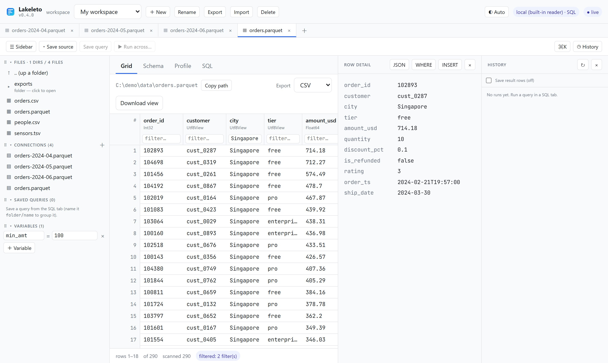
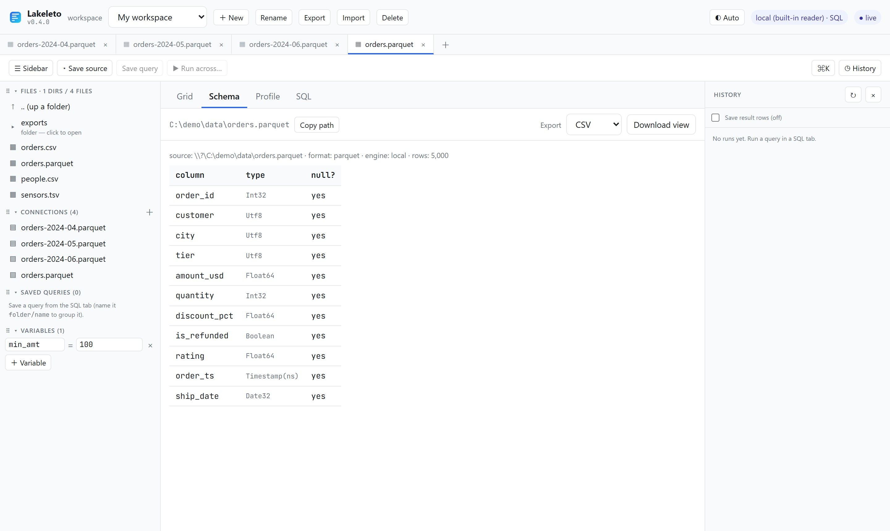
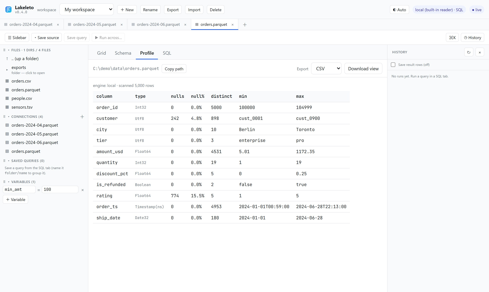
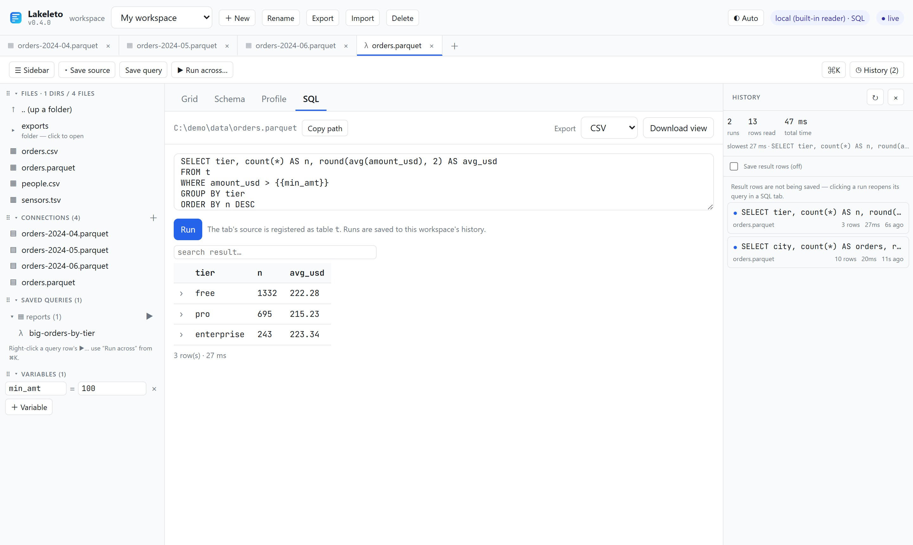
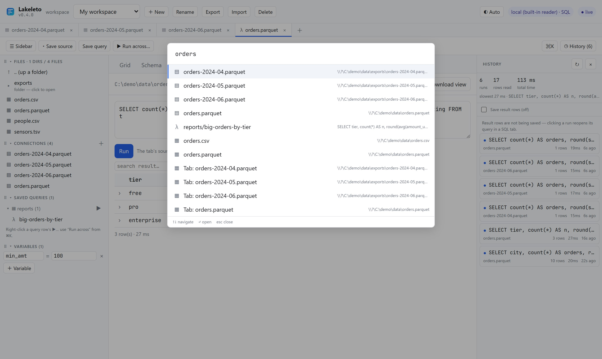

Data engineers
You live in a terminal and want to see a table before you build on it. lakeleto schema, head and profile --fast answer in one line, in CI too.
Parquet, CSV, JSON, Iceberg, Delta, a bucket or a database: point Lakeleto at it and get a grid, a profile and SQL in your browser. Nothing is imported, nothing is uploaded.
Download lakeleto-0.4.1-x64.msi → double-click → Start Menu › Lakeletobrew install lucheeseng827/lakeleto/lakeletobrew install lucheeseng827/lakeleto/lakeletodocker run --rm -p 8080:8080 -v "$PWD:/data:ro" mancube/lakeleto serve --addr 0.0.0.0:8080 --root /datacargo binstall lakeletoWindows .msi · macOS .dmg (universal) · Linux x86_64 / arm64 static · Apache-2.0 · no account

Pick a question. The command and the answer below are exactly what Lakeleto 0.4.0 printed for orders.parquet, the 5,000-row sample in the repo.
$ lakeleto query "SELECT city, count(*) AS orders, round(sum(amount_usd), 2) AS revenue FROM t GROUP BY city ORDER BY revenue DESC LIMIT 5" --file orders.parquet| city | orders | revenue | |-----------|--------|----------| | Sydney | 503 | 66834.05 | | Toronto | 517 | 66242.49 | | Mumbai | 515 | 65590.18 | | Singapore | 550 | 64419.91 | | London | 493 | 62170.92 | 5 row(s)
The open file is the table t. Name more with --table name=path. Add -o json, csv, parquet or arrows to pipe it on. The same SQL runs in the browser's SQL tab.
Screenshots of v0.4.0 on the same sample data, taken for this page.

amount_usd, filtered to Singapore and >= 10 units: 290 of 5,000 rows, exact across the whole file. Scroll to the last row; it reads a window at a time.
WHERE clause that finds it again, or as an INSERT for a fixture.

rating is 15.5% null, which you see before you average it.

{{min_amt}} is filled in from the sidebar at run time. Save as reports/name to file it in a folder, then run the whole folder.

No account, no server in the path. Buckets are read with your own credentials, straight to your laptop.
SQL is SELECT only and database connections can't write. Exports are new files.
The UI is inside the binary. No CDN, no fonts to fetch. Runs on a plane or an air-gapped box.
lakeleto mcp lets Claude, Cursor or any MCP client read your tables, capped and confined to a folder.
Lakeleto is a viewer first. The engines below are excellent, and Lakeleto's SQL runs on one of their peers (Apache DataFusion). What differs is what you get without writing code.
| Lakeleto 0.4 | DuckDB CLI | Polars / pandas | VisiData | |
|---|---|---|---|---|
| What it is | Table viewer + read-only SQL | SQL database engine | Python DataFrame libraries | Terminal spreadsheet |
| Point-and-click UI | Yes, in the browser, bundled | Web UI via duckdb -uifront end loaded from ui.duckdb.org | No (notebooks) | Keyboard TUI |
| Fully offline UI | Yes | CLI yes, web UI no | — | Yes |
| Grid with sort, filter, row detail | Yes, over the whole file | No | No | Yes |
| Per-column profile | Yes, plus a Parquet-footer fast path | SUMMARIZE | describe() | Describe sheet |
| SQL | Read-only (DataFusion) | Full, read-write | Polars SQLContext; pandas no | No |
| Iceberg / Delta | Built in, current snapshot | Extensions | Polars with pyiceberg / deltalake; pandas via those libraries | No |
| Saved queries, variables, history, run-across | Yes | No (UI: notebooks) | Your own scripts | No |
| MCP server for AI agents | Built in | Separate projects | No | No |
| Install | One binary or installer | One binary | Python + packages | Python package |
| Can change your data | No, by design | Yes | Yes | Can save edits |
| Licence | Apache-2.0 | MIT | MIT / BSD-3 | GPL-3.0 |
From each project's own documentation as of November 2026. Tell us if a row is out of date.
Each bar is one command typed in a terminal, start to exit, median of five runs on a warm file cache. Lakeleto answers "what is this file?" fastest and on a CSV it leads. On a full scan of a 20-million-row Parquet file, DuckDB is about twice as fast. Lakeleto and DuckDB finish every task in under 0.3 s, using a fraction of the memory of loading a DataFrame.
Bars are time, scaled to the slowest tool in each task. The label is the median time, then the process's peak working set. Shorter is better on both.
Polars and pandas are timed as Python one-liners, so roughly 0.2–0.3 s of each is starting Python and importing the library. In a notebook that's paid once. From a terminal it's paid every time.
Run 2026-11-04 on one laptop: AMD Ryzen 9 8945HS (8 cores, 16 threads), 93 GiB RAM, NVMe SSD, Windows 11. Lakeleto 0.4.0 (release build, release feature set), DuckDB CLI 1.4.1, Polars 1.34.0, pandas 2.3.3 with pyarrow 21.0.0, Python 3.12. Each command ran once to warm the cache, then five times; the median is shown. Memory is the peak working set Windows records for the process. All four tools returned the same counts and sums.
Data: 20,000,000 orders-shaped rows (10 columns: ids, strings, doubles, a boolean, a timestamp) generated by DuckDB with a fixed seed and written as Snappy Parquet (463 MiB), and 2,000,000 of the same as CSV (145 MiB). One machine and one data shape. Your numbers will differ, so run it yourself: gen.py, bench.py, raw results.
lakeleto schema orders_20m.parquet
lakeleto head orders_20m.parquet -n 10
lakeleto query "SELECT city, count(*) AS n, round(sum(amount_usd), 2) AS revenue
FROM t GROUP BY city ORDER BY revenue DESC" --file orders_20m.parquet
lakeleto query "SELECT order_id, city, amount_usd FROM t WHERE tier = 'enterprise'
AND NOT is_refunded ORDER BY amount_usd DESC LIMIT 10" --file orders_20m.parquet
duckdb -c "DESCRIBE SELECT * FROM 'orders_20m.parquet'; SELECT count(*) FROM 'orders_20m.parquet';"
duckdb -c "SELECT * FROM 'orders_20m.parquet' LIMIT 10" # and the same two queries
python -c "import polars as pl; pl.scan_parquet(f).group_by('city').agg(...).collect()"
python -c "import pandas as pd; pd.read_parquet(f, columns=['city','amount_usd']).groupby('city')..."
python -c "import pyarrow.parquet as pq; pq.ParquetFile(f).schema_arrow / .metadata.num_rows" # pandas column
Lakeleto is an early release, v0.4.1. It's built for these three cases.
You live in a terminal and want to see a table before you build on it. lakeleto schema, head and profile --fast answer in one line, in CI too.
You have a Parquet file and no Python. Install, click the file, scroll, filter, export to CSV. SQL is there when you want it.
Customer records, regulated data, air-gapped boxes. Nothing leaves the machine, and --root keeps it to one folder.
Need to transform, join across warehouses or write results back? Use DuckDB or Polars. Lakeleto hands you Parquet or Arrow (-o parquet, -o arrows) to pass along.
It's v0.4.1, an early release. The grid, schema, profile, SQL, export, every reader above and the database connectors work today, and the maintainers use it daily. Expect rough edges, and file them.
Nothing. The tool is Apache-2.0 and stays that way. A hosted team edition is on the roadmap. It isn't available, and nothing on this page depends on it.
Yes. The grid reads a window at a time and Parquet by row group. Sorts and filters run in the SQL engine over the whole file. Iceberg and Delta tables are loaded into memory for that.
No Authenticode certificate or Apple notarization yet. On Windows: More info → Run anyway. On macOS: right-click → Open once. Every release carries a cosign signature, a SHA-256 and SLSA provenance you can check instead.